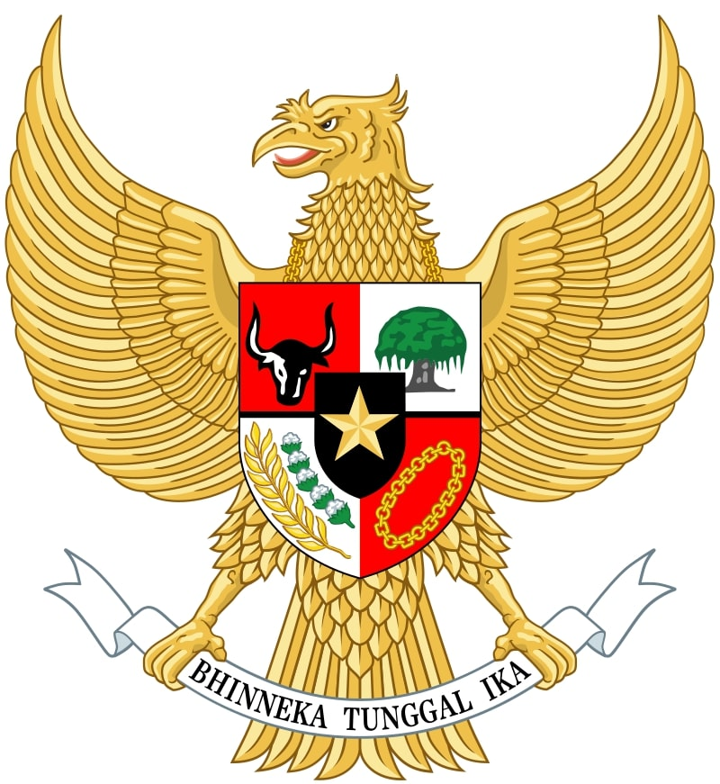
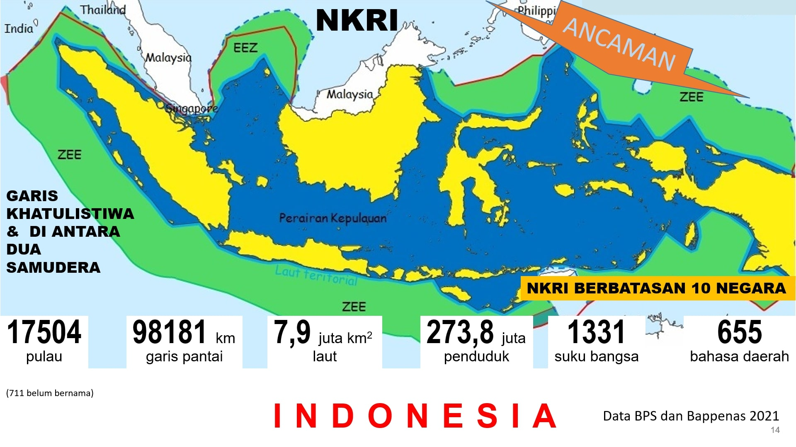
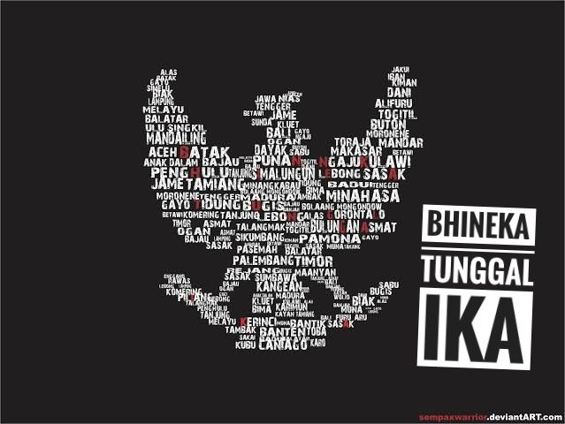

Wawasan Kebangsaan
| KONSENSUS DASAR | |||
| No | Konsensus | Keterangan | Visual |
| 1 | PANCASILA | Kedudukan & fungsi
|
 |
| 2 | UUD 1945 | UUD 1945 merupakan hukum dasar tertulis dan tertinggi serta serta merupakan puncak dari seluruh peraturan perundang-undangan |
|
| 3 | NKRI | Berdasarkan Amandemen pasal 25A, Indonesia NKRI adalah sebuah negara kepulauan yang berciri Nusantara dengan wilayah yang batas-batas & hak-haknya ditetapkan dengan Undang-Undang. |
 |
| 4 | Bhineka Tunggal Ika |
Fugnsi mendasar Bhineka Tunggal Ika adalah landasan persatuan & kesatuan |
 |
| Penekanan kontennya adalah pada ranah menyadarkan bahwa keempat konsensu, yaitu Pancasila. UUD NKRI 1945, NKRI, & Bhineka Tunggal Ika merupakan dasar atau landasan warga negara dalam bersikap, berpikir, berkata & bertindak, untuk mempertahankan kelangsungan hidup bangsa & negara. |
|||